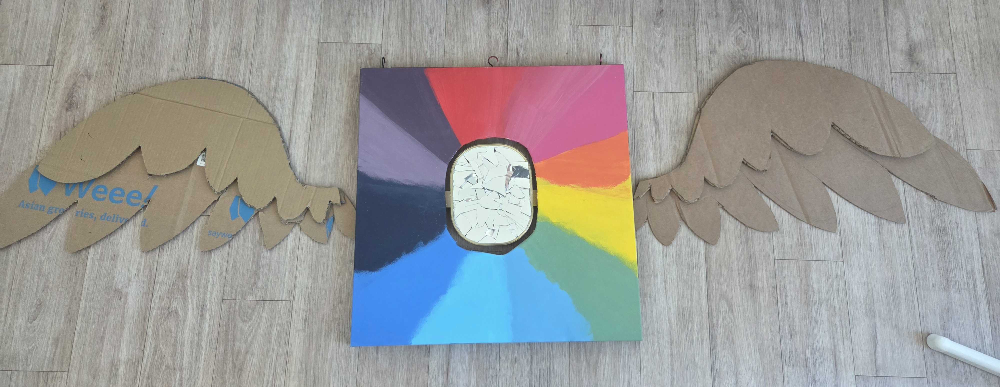

CATHERINE "DerpRex" MACDONALD
( SHE/THEY )
Portfolio: LINK
About the Artist
Catherine MacDonald is a digital focused artist who tends to branch out into other mediums due to simply adoring the act of creation. Currently, she is a DMA student at San Jose State University, slated to graduate within fall of this year of 2026. Their main inspiration would have to be Youtube, as she spends most of their time watching this platform. With such an expansive site with millions of videos to watch, she has been inspired by many. Whether that be animator or illustrator, they have been driven to create by some of the greats. The best in their opinion being June or GinjaNinjiaOWO. An illustrator who is not only very creative, but has a similar love for art as Catherine. While Catherine wishes to reach the success and accomplishments June or any other of their heroes have over the course of a career in the arts, they have very little experience in the field. Mainly due to being afraid of the world around them, which she hopes to translate into works going forward. Her main hope in life as an artist is to share. To create a world where they can feel comfortable being in, one that appeals to all the lonely kids out there who sought entertainment to save them from whatever was going on. That is their overall goal as an artist.
Guardian of Artistic Integrity
Guardian of Artistic Integrity; a mouthful of a title, but one that encapsulates the type of mindset I have as an artist. For a simpler explanation that hopefully won't strain your brain, I'd say the words organized chaos would suffice as a two word summarization. I'm not the most technically skilled. Typically my artistic workflow is spur of the moment, meaning I usually make an art piece when I want to. So when planning something to showcase I really had to work my brain, and this was the child born from that. Named Chao Faciphim, this painting is not just a work of art upon the wall, but a character I wish to add to my arsenal of over a hundred original little guys. Creating characters. Drawing them and writing stories is my greatest passion. Using every and any medium to grow this cast and world is one of my many goals as an artist driven by instinct. Inside this painting I've inserted elements I hold dear to my heart such as the rainbow. All colors I have associated with a character or feeling that I've grown very attached to and just needed to add to this piece. Same with wings. Things I adore drawing I found I needed to fabricate for Chao so they have more life. All these elements, a chaotic mix of my many loves now dangling before you. My hope is that you truly enjoy it. It is a personal piece. I've poured all my creative inspiration into them, even fabricating a name for them despite having little lore written as of yet. Look all you want. Ponder the meanings behind every single lovingly made piece of the overall puzzle. If you don't wish to engage, I understand. From the outside it looks like a mess. But please, I implore you to enjoy yourself in crafting your own view. To me, art can be whatever we desire. So, feel free to place your desired meaning upon my work. Let me give that to you as a welcoming host into my world.
